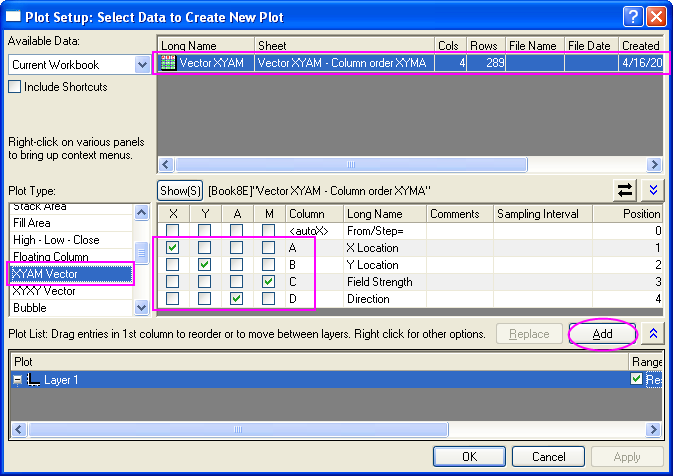
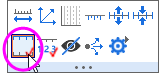
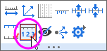
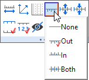

2D-Vektordiagramm
Vector-Graph
Zusammenfassung
Ein Vektordiagramm ist ein mehrdimensionales Diagramm, das in Bereichen wie der Meteorologie, Luftfahrt, Forschung und dem Bauwesen verwendet wird, in denen Fließdiagramme (z.B. von Wind, Wasser, magnetischen Feldern etc.) eingesetzt werden. In einem Vektordiagramm werden Richtung und Größe dargestellt. Origin bietet zwei Typen von Vektordiagrammen an:
- Vektor XYWG - Verwendet einen XY-Punkt als Vektoranfang (standardmäßig), einen Winkel und eine Größe.
- Vektor XYXY - Verwendet zwei XY-Positionen und verbindet sie mit einem Vektor.

Was Sie lernen werden
Dieses Tutorial zeigt Ihnen, wie Sie:
- zwei Daten organisierende Modi zum Zeichnen eines Vektordiagramms verwenden.
- den Dialog Diagrammeinstellungen verwenden, um Daten zum Zeichnen zuzuweisen.
Schritte
Dieses Tutorial basiert auf dem Projekt: <Origin-Verzeichnis>\Samples\Tutorial Data.opju.
Sie können dieses Diagramm auch im Lernzentrum finden. (Wählen Sie Hilfe: Lernzentrum im Menü oder drücken Sie die Taste F11. Öffnen Sie dann Diagrammbeispiel: Spezialisierte Diagramme.)
Um ein Vektordiagramm zu erstellen, brauchen Sie vier Datenspalten und organisieren Ihre Daten in zwei Modi:
Vektor XYWG
XYWG steht für X, Y, Winkel und Größe. Vektoren beginnen bei Punkt (X, Y) und drehen sich in einem festgelegten Winkel. Das folgende Beispiel verwendet den XYWG-Datenmodus zum Erstellen eines Vektordiagramms.
- Öffnen Sie Tutorial Data.opj und navigieren Sie zum Ordner 2D Vector im Projekt Explorer (PE).
- Aktivieren Sie das Datenarbeitsblatt Book8E. Wählen Sie ohne Markieren von Spalten Zeichnen: Spezialisiert: Vektor XYWG, um den Dialog Diagrammeinstellungen zu öffnen. Die Spalten A, B, D, C werden dann X, Y, W, G zugewiesen. Klicken Sie auf OK, um das Diagramm zu zeichnen.

 | Um alle drei Bedienfelder im Dialog Diagrammeinstellungen anzuzeigen, erweitern Sie bitte das Bedienfeld Diagrammtyp, indem Sie auf  klicken, und erweitern Sie das Bedienfeld Verfügbare Daten, indem Sie erneut auf klicken. klicken, und erweitern Sie das Bedienfeld Verfügbare Daten, indem Sie erneut auf klicken.
Bitte lesen Sie unter Mit Hilfe des Dialogs Diagrammeinstellungen zeichnen weitere Informationen zu diesem Thema.
|
- Wählen Sie Format: Zeichnung, um die Ebene der Zeichnung des Dialogs Details Zeichnung aufzurufen. Wechseln Sie zur Registerkarte Vektor und setzen Sie den Multiplikator Betrag auf 75. Klicken Sie auf OK, um den Dialog Details Zeichnung zu schließen.
- Klicken Sie auf die linke Achse und dann auf die Schaltfläche Gegenüberliegende Achse zeigen auf der Minisymbolleiste. Klicken Sie auf die untere Achse und dann auf die Schaltfläche Gegenüberliegende Achse zeigen auf der Minisymbolleiste.
- 
- Klicken Sie auf die rechte Achse und dann auf die Schaltfläche Hilfsstrichsbeschriftungen zeigen auf der Minisymbolleiste. Klicken Sie auf die obere Achse und dann auf die Schaltfläche Hilfsstrichsbeschriftungen zeigen auf der Minisymbolleiste.
- 
- Klicken Sie auf die rechte Achse und dann auf die Schaltfläche Hilfsstrichsstil und wählen Sie Außen auf der Minisymbolleiste. Klicken Sie auf die obere Achse und dann auf die Schaltfläche Hilfsstrichsstil und wählen Sie Außen auf der Minisymbolleiste.
- 
- Klicken Sie mit der rechten Maustaste auf das Feld der Legende, um das Kontextmenü aufzurufen. Wählen Sie Einstellungen, um den Dialog Objekteigenschaften zu öffnen: Geben Sie \l(1) Field Strength in dem Textfeld ein und klicken Sie auf OK.
- Verwenden Sie die Schaltfläche Texthilfsmittel und fügen Sie den Titel Spot Write Effectiveness zu diesem Diagramm hinzu.
Vektor XYXY
Ein weiterer Modus zum Organisieren von Daten ist XYXY, wobei das erste Paar XY der Anfangspunkt des Vektors ist, während das letzte XY-Paar den Endpunkt darstellt.
Um so ein Vektordiagramm zu erstellen:
- Aktivieren Sie die Arbeitsmappe Book9E im Ordner 2D Vector. Klicken Sie auf die Spalte C und dann auf die Schaltfläche Als X setzen in der Minisymbolleiste.
- Markieren Sie alle vier Datenspalten darin und wählen Sie Zeichnen: Spezialisiert: Vektor XYXY im Hauptmenü.